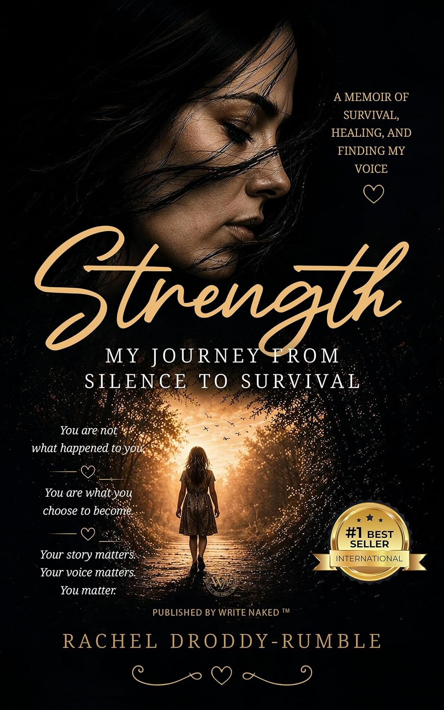
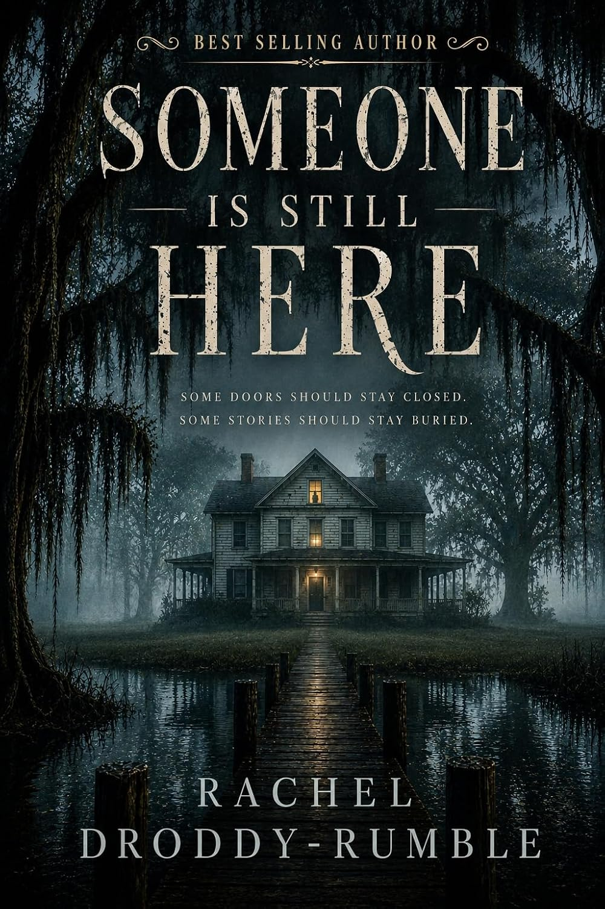
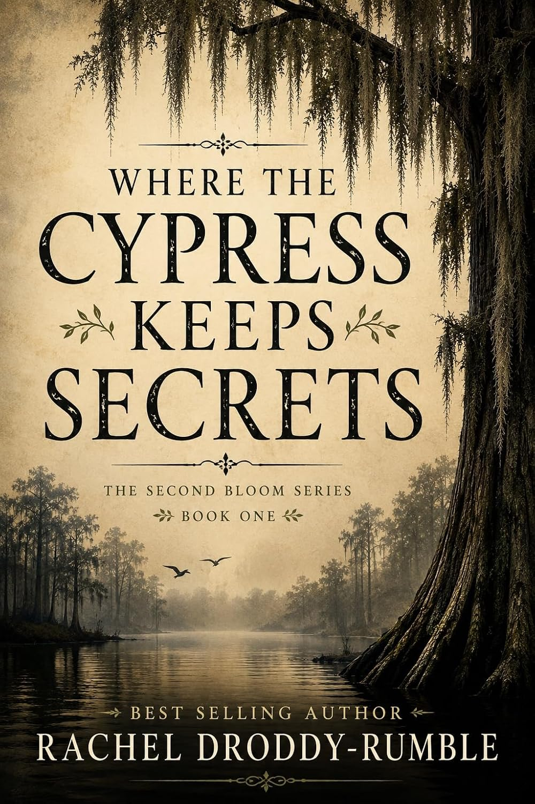
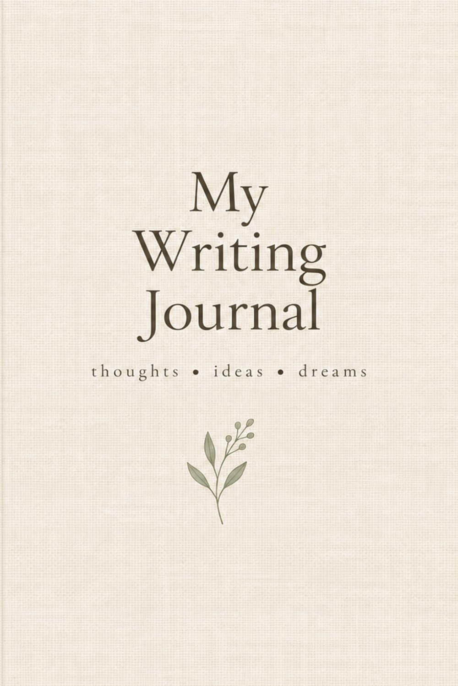

A monthly invitation
Guests at Ravenloft
Monthly Author Spotlight
Bestselling author, Army veteran, and storyteller with deep Louisiana roots, Rachel writes about survival, secrets, resilience, and the darker corners of human nature.
Her work spans a deeply personal memoir, paranormal suspense in the Louisiana bayou, and the Second Bloom psychological thriller series.
Even after the darkest chapters, another beginning is possible.



Meet Rachel
Rachel Droddy-Rumble is a bestselling author, Army veteran, and storyteller with deep Louisiana roots.
Her writing explores survival, secrets, resilience, and the darker corners of human nature, ranging from deeply personal nonfiction to psychological thrillers and haunting Southern suspense. Her memoir, Strength, shares a powerful story of surviving childhood trauma and finding the courage to keep moving forward.
She is also the author of Someone Is Still Here, a paranormal suspense novel set in the Louisiana bayou, and Where the Cypress Keeps Secrets, the first novel in her Second Bloom psychological thriller series. Known for atmospheric settings, strong women, emotional storytelling, and compelling twists, Rachel draws inspiration from the South and real-life resilience.
When she isn’t writing, Rachel enjoys traveling, spending time with family, caring for her plants, connecting with readers, and encouraging other independent authors. For her, writing is a way to turn difficult experiences into something meaningful and remind readers that even after the darkest chapters, another beginning is possible.
Follow Rachel

This Month's Guest:
Wayne A. Elderkin

The Last Desposyni
The Book of Souls Saga
Available Now
Distributed through Amazon and IngramSpark and available through Barnes & Noble.
Buy on AmazonMeet Wayne
Wayne A. Elderkin lives in Massachusetts with his wife, Cristina, their daughter, Ava, and their loveable dog, Wicket (yes, like the Ewok).
A lifelong lover of stories in every form, Wayne draws inspiration from the music that shaped him — rock & roll, metal, and the raw edge of grunge — and from the films that fire his imagination, especially horror, supernatural thrillers, action epics, and sharp-witted comedies.
When he isn’t writing, he’s reading comics, watching movies, binge-watching shows, sitting on the beach, hitting the gym, or playing with his dog. Those everyday moments keep him grounded and shape the realms he builds, where myth and emotion meet and where characters face not only the monsters around them but also the ones within.